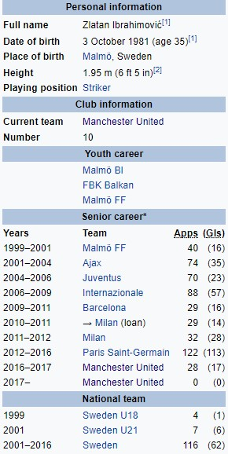

Златан Ибрахимовић
Златан Ибрахимовић (рођен 3. октобра 1981.) је шведски професионални фудбалер који игра као нападач за Манчестер Јунајтед. Некада је био члан репрезентације Шведске, који је своје главно међународно дебитовао 2001. године и био капетан од 2010. године, све док се није пензионисао у 2016. години. Пре свега нападач, он је врстан стрелац, који је најпознатији по својој техници, креативности, снази, способности у ваздуху и његовој моћној и прецизној способности шута. Од маја 2017, он је други најслављенији активни фудбалер на свету, освојивши 33 трофеја у својој каријери. Ибрахимовић је започео своју каријеру у Малмо ФФ крајем деведесетих година прошлог века, пре него што га је довео Ајакс, где је и сам направио име. Потписао је за Јувентус и одликовао у Серији А у нападачком партнерству са Давидом Трезегеом. Године 2006, потписао је за супарничку страну Интер и добио је место у УЕФА Тиму године 2007. и 2009. године. Осим тога, Ибрахимовић би завршио као најбољи стрелац лиге у 2008-09 и освојио три Скудета. У лето 2009. године прешао је у Барселону, а пре него што се вратио у Серие А ногомет следеће сезоне, придружио се Милану у уговору који га је учинио једним од најплаћенијих играча на свету. Освојио је још један Скудето са Миланом у сезони 2010-11. Прикључио се у Пари Сен-Жермену у јулу 2012. Током четири сезоне боравка у ПСГ, Ибрахимовић је освојио четири узастопне лиге Лиге 1, три Купа де ла Лигуеа, два Купа Француске и био најбољи стрелац у Лигуе 1 у три сезоне. У октобру 2015. постао је ПСГ-ов главни стрелац. Завршио своју ПСГ каријеру са 156 голова у 180 мечева.
